氣功ビデオ講座 6月号
天と地をつなぐ、体内のルート作り
氣のボールで、体の中心と足の氣のルートを整える。
天・地・人が一体になるための準備を、動画でていねいに学びます。
- 形式動画講座
- 収録時間約30分
- 準備立てるスペース
前回までの講座： 3月号（立ち方） ／ 4月号（補と瀉） ／ 5月号（補と瀉 応用編）
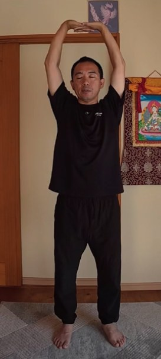
こんなこと、ありませんか？
- 氣功の動きが、ただの運動になっている気がする
- 天と地とのつながりを、感覚として知りたい
- 氣のボールの使い方を、動画で確かめたい
- 首・肩・腰まわりのこわばりが気になる
氣功の動きが運動になるか、氣功になるかは、意識がどこにあるかで変わります。
6月号の考え方
天・地・人が一体になる。
そのための「体の中のルート」
氣功では、天・地・人が一体になっている状態で行うことが、基本中の基本と言われます。3月号の立ち方で地とつながり、4月号・5月号の補と瀉で氣を動かしました。
今回は、天とつながるための、体の中のルートを作ります。氣のボールで体の中心と足を整え、手のひらで「天の氣を取る」と思う。意念の使い方を、動画で確かめます。
動きの中には、氣功のいろいろな秘訣が入っています。一つひとつの動きを、ていねいに行うことを大切にしています。
この講座で学ぶこと
6つのステップで、
体の中の氣のルートを作ります
-
1
氣のボールを作り、百会に入れる
胸の前で、両手の間に氣のボールを作り、頭のてっぺんの百会に入れます。百会の場所も、動画で確かめられます。
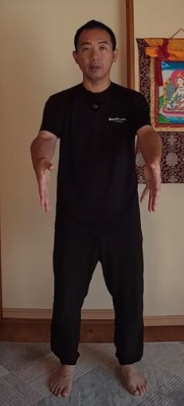
氣のボールを持つ 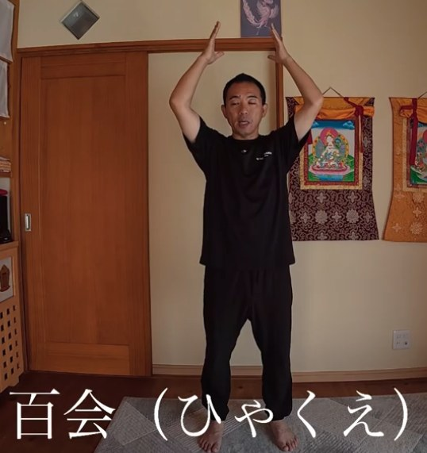
百会に入れる -
2
手のひらで「天の氣を取る」
頭上で手を組み、手のひらを天に向けて、ぐーっと伸びます。大切なのは「どうやるか」より「天の氣を取る」と思うこと。膝・股関節・肘を伸ばしきらない、という注意点もお伝えします。
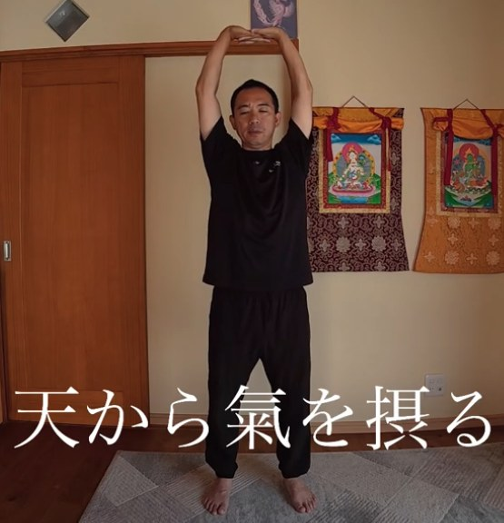
天から氣を摂る -
3
首・胸・腰を中心に回す
天と首、天と胸、天と腰が一体になって、それぞれを中心に回します。イメージは、遊園地のブランコ。意識が途切れると運動になってしまう、という大切なポイントも学びます。
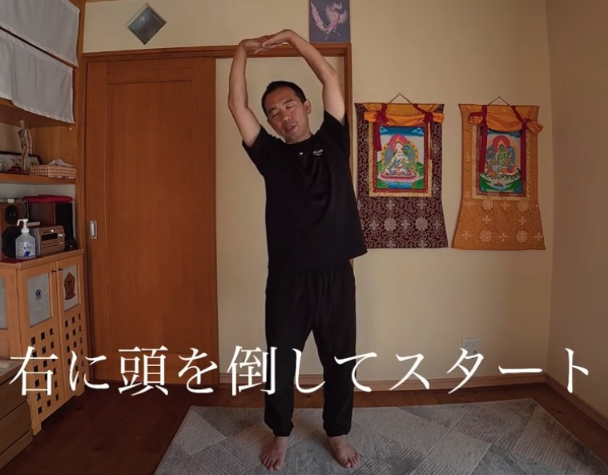
右に倒してスタート 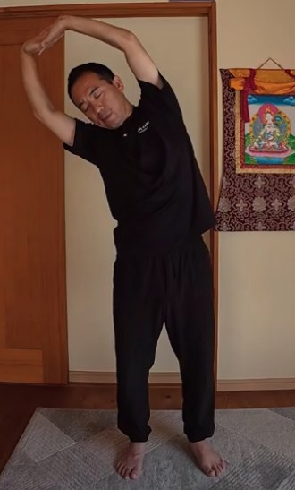
胸を中心に 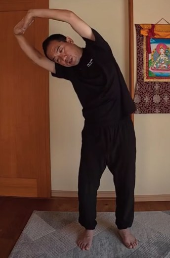
腰を中心に -
4
氣のボールで、体の中心を通す
氣のボールを百会に入れ、体の中心を通って下りていくイメージで、手と一緒に下ろします。体の中心に、氣の流れる道を作ります。
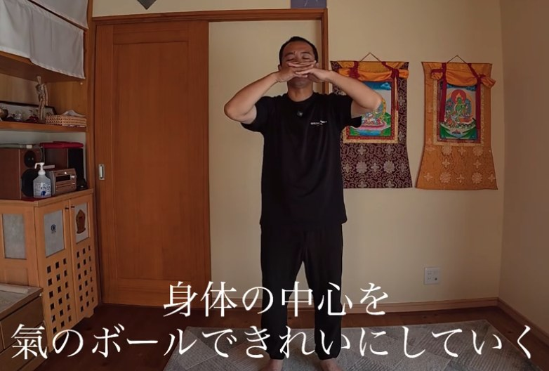
体の中心をきれいにしていく -
5
足のルートを作る
足を斜め前に出し、かかとからつま先へ。氣のボールが足の中を通るイメージで行います。腰を曲げず、股関節を使って、手が膝より下にいかないようにする形も、NG例と見比べながら確認できます。
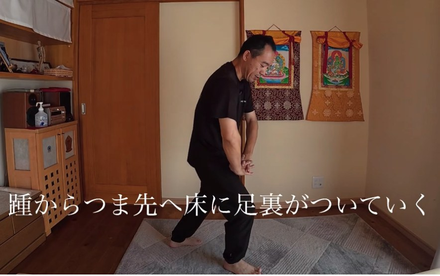
かかとからつま先へ 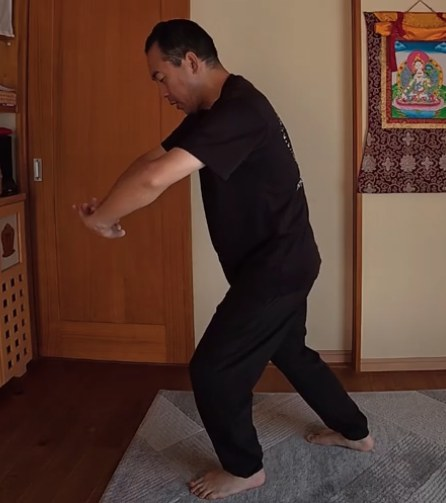
手のひらを前に出す 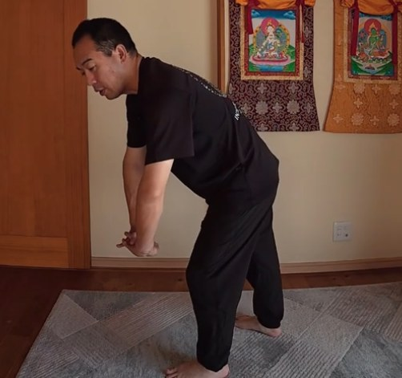
NG：腰を曲げる 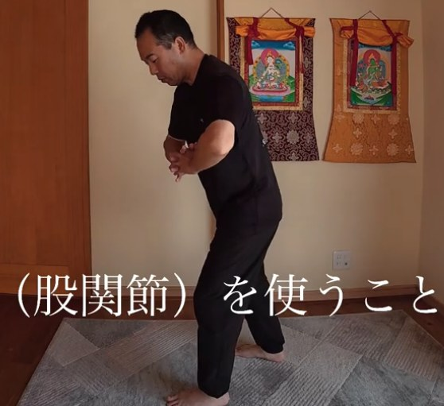
OK：股関節を使う -
6
収功と、腰・肩のセルフケア
氣を収めて終えたあと、体の中心に氣が通ってリラックスしやすくなった状態で行う、腰と肩のセルフケアも紹介します。
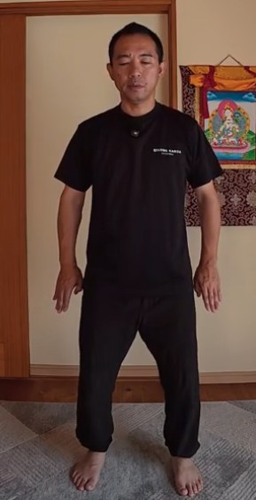
収功 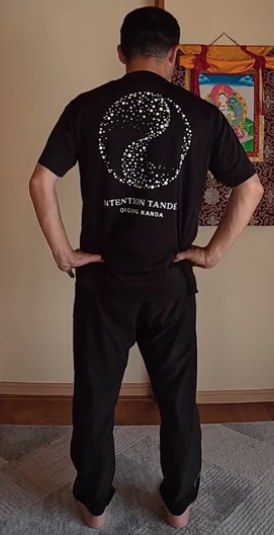
腰のセルフケア 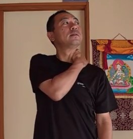
肩のセルフケア
この講座の特長
「意識の置き方」と「体の使い方」を、動画で確かめる
運動と氣功の違いがわかる
手のひらと天と、自分の中の柱を意識し続ける。意識の置き方で、動きの質がどう変わるかを学びます。
つまずきやすい形を確認
関節を伸ばしきらない、手は膝より下にいかない。形のポイントを、NG例も交えて確かめられます。
通しで行える流れ
天とつながる、体の中心を整える、足を整える、収功。一連の流れを、通しで練習できます。
天と地とつながる前に、
体の中の氣のルートをつくる。
講師
神田 一郎（かんだ いちろう）
富士山のふもとで、氣功を教えています。リハビリの現場での経験と、ご自身の体と向き合ってきた歩みを土台に、「なんでもOK、オールOK」の気持ちで、無理なく続けられる氣功をお伝えしています。
この講座でも、うまくできているかどうかを気にするより、まずは自分の体の小さな変化に気づくことを大切にしています。
講座の概要
- 講座名
- 氣功ビデオ講座 6月号「天地を繋ぐ体内のルート作り」
- 形式
- 動画講座（講師が実演しながら解説）
- 収録時間
- 約30分
- 内容
- 氣のボールと百会／天の氣を取る／首・胸・腰を中心に回す／体の中心を通す／足のルート／収功／腰と肩のセルフケア
- 準備するもの
- 動画を見ながら立てる広さ
- 価格
- 8,800円（税込）
- 視聴方法
- Vimeo（お支払い完了後、いつでもご視聴いただけます）
- お支払い
- PayPal
氣功ビデオ講座シリーズ
段階を踏んで、少しずつ深めていく
月ごとに、内容がつながっていくシリーズです。6月号は、天とつながるための体の中のルートを作ります。
- 3月号氣功を始める第一歩（立ち方）詳細を見る
- 4月号補と瀉（腕の氣を通す訓練）詳細を見る
- 5月号補と瀉 応用編（遠くから丹田へ）詳細を見る
- 6月号天地を繋ぐ体内のルート作りこの講座
- 7月号天地を繋ぐ その2
- 8月号天地を繋ぐ その3
- 9月号意念と氣の法則と氣感
よくあるご質問
3月号〜5月号を見ていなくても受講できますか？
受講できます。ただ、6月号は、立ち方（3月号）や、補と瀉（4月号・5月号）の上に、天とのつながりを重ねていく内容です。質を高めたい方は、3月号、4月号、5月号から順にご覧いただくのがおすすめです。
氣功が初めてでも大丈夫ですか？
はい。ただ、シリーズの途中の内容にあたるため、初めての方は3月号から始めるのがおすすめです。
準備するものはありますか？
動画を見ながら立てるスペースがあれば大丈夫です。
購入後は、どうやって視聴しますか？
お支払い完了後、いつでもVimeoでご視聴いただけます。
どんな効果がありますか？
体の感じ方には個人差があります。この講座は、体の使い方を学ぶ内容であり、医療行為や、病気の診断・治療を目的としたものではありません。体調に不安がある方は、無理をせず、医師にご相談ください。